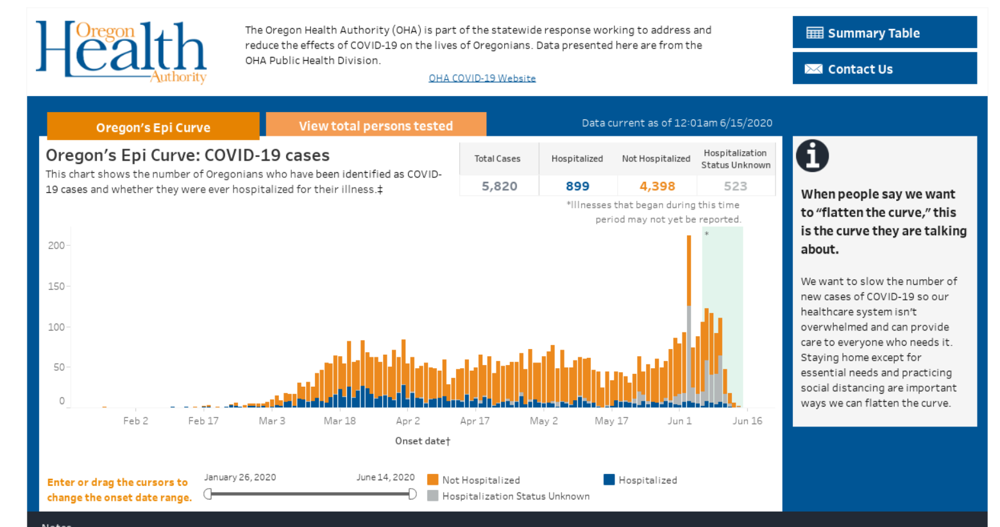
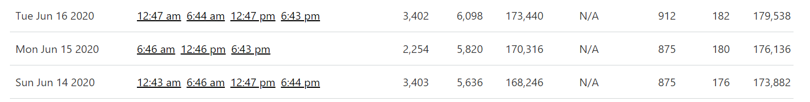
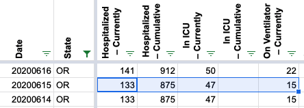
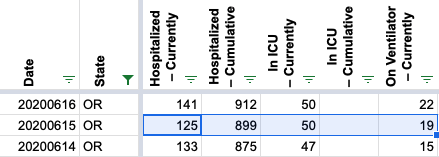
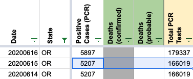
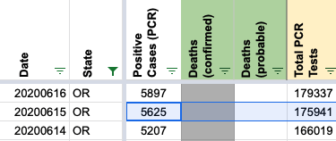

[OR] 6/15 Incorrect Hospitalization Value
Issue number 631
the-daniel-lin opened this issue on July 15, 2020 at 10:25 am
Labels Data quality Historical Data
"In Oregon the hospital/ICU/Vent counts are missing for Monday 6/15. This is provided (M-F) on Oregon’s “Daily Update” PDF. You can get there by using the “Primary Source” you guys already have:
https://govstatus.egov.com/OR-OHA-COVID-19
… then click “+ Additional Data and Projections” … then click “COVID-19 Daily Update” … which links to this PDF: https://www.oregon.gov/oha/PH/DISEASESCONDITIONS/DISEASESAZ/Emerging Respitory Infections/Oregon-COVID-19-Daily-Upda…
THANKS SO MUCH for coordinating this effort! This has been a HUGE help!"
I was unable to find ICU/Vent values from screenshots/wayback, but we do have a screenshot from 6/15 that shows an updated Hospitalization value – 899 (not 875). 
Current CTP Data: 
If you don’t find that trustworthy, then you can also get that same PDF directly from Oregon Health Authority:
Thanks for correcting this – and thanks for the great resource.
@terwilliger42 Thank you so much for reporting this and following up to link to this data. Oregon is a tough state for us to record correctly because of the weekday/weekend reporting differences. Looking at this, I am pretty sure we have other days we can fix with these state reports. I’m not sure if they’ve always been there and I just hadn’t seen them, but I personally have done cleanup work based on their textual press releases; these seem much better. Anyway, I will open a follow-up issue to investigate that possibility. Meanwhile, I’ve fixed our hospitalization data for 6/15:
Before: 
After: 
This report can also be used to update our Positive Cases (PCR) and Total PCR Tests columns for 6/15 (previously they were unchanged that day).
Before: 
After: 
I’m the original submitter of that support ticket. Here’s the Oregon Health Authority’s report from that day – which has all of the values (vent, hospital, icu, etc).
20200615.pdf